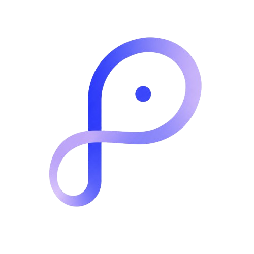

Most AMMs quote the same way in a crash as on a quiet Sunday. Poincaré watches its own price, runs a CUSUM quickest-change detector with a mathematical optimality proof behind it, and defends its liquidity providers only once a genuine trend is underway, firing at a moment no attacker can predict. No oracle, no keeper, and nothing to bribe.
There is an invisible tax on every pool, and it has a name: Loss-Versus-Rebalancing. Whenever the price moves, arbitrageurs trade against the pool's stale quote and keep the difference. The Milionis–Moallemi–Roughgarden–Zhang identity pins down what drives it:
Notice what is missing: the fee. Every fee-tweaking hook pulls a lever that is not in the formula. And notice what drives it, which is sustained one-directional moves. Chop barely hurts LPs. Trends drain them.
Both paths take the same set of step sizes, and only the order of the signs differs. The one that goes nowhere barely leaks value, while the one that trends is arbitraged the whole way.
Statisticians spent seventy years on exactly this question: detect a regime change as fast as possible without crying wolf. The workhorse answer is the CUSUM statistic, which accumulates evidence each block and fires the moment that evidence crosses a threshold.
It comes with a proof: under Lorden's criterion, CUSUM minimises worst-case detection delay for any tolerated false-alarm rate. Not a heuristic that felt right, but the best possible answer to the speed-versus-false-alarms question.
A scan of the entire 562-hook Uniswap hook directory returns zero uses of CUSUM, change-point detection, SPRT or quickest detection. Everything out there triggers on moving averages and fixed thresholds, which is exactly what an attacker can time.
The firing moment is a data-dependent stopping time: a real trend crosses fast, and noise never gets there. There is no "after N blocks" for an attacker to precompute.
The detector's parameters decide what counts as a trend. So we shipped the Detector Lab: it replays the pool's own recorded history under any parameters you choose, against the deployed configuration as a control, using an exact port of Cusum.sol, DirectionalSignal.sol and ControlLaw.sol.
Replaying the deployed parameters reproduces the trace the hook actually emitted across 362 real blocks, exactly, with every trend label matching. The capture is committed as a fixture and asserted in CI, so the port cannot drift from the contracts without failing a build.
Drop the threshold and watch it fire inside chop. Drop the directional gate and watch the duty cycle explode. The honest answer to "why these numbers" stops being a paragraph and becomes something a reviewer can move a slider and check.
The detector holding fire while evidence climbs. The moment it commits and κ ramps in, rate-limited. Who actually pays: the with-trend side quoted worse, the stabilising side at the plain base price.
poincare-beta.vercel.app · a real pool, a real hook, a real chain. Everything on screen is read straight from Unichain Sepolia, with no mock data and no staged screenshots.
Any spread lowers LVR, so beating x·y=k proves nothing. We built the baseline most likely to beat us: a symmetric volatility-scaled fee, sized to cost traders the same, over 12 months of real ETH/USDC (13 Sep 2025 to 12 Sep 2026). The detector was calibrated on the first half only.
Both pools cost uninformed traders 3,521 USDC, matched to 0.01%. Poincaré returned +23,706 in LP value against the baseline's +18,184, which is 6.73 against 5.17 of LP value per unit of trader cost.
4.41% against our 4.27%. That is the number the harness produced, so it is the number we show. A symmetric fee collects on every block; we only collect from the flow that is taking money out.
LVR ≤ constant product on every path and every block, asserted in the test suite. The equal-friction check is asserted too, so the comparison cannot quietly become unfair.
Poincaré was selected by the Uniswap Foundation Security Fund, which sponsored a security review by Olympix. It reports only what it can prove, with each finding arriving as a runnable Foundry exploit. All nine are fixed, and every fix ships with a regression test that fails on the pre-fix code.
Seven fixes cover nine findings, because two pairs shared a root cause. Finding, fix and test are mapped in SECURITY.md. A sponsored review is not a full independent audit, and we say so: an external audit remains required before mainnet.
No oracle, AVS, keeper, relayer or cross-chain service. The only input is the pool's own reserve-implied price. Adding a feed would reintroduce exactly the trust and latency assumptions the detector exists to remove.
The curve is the actuator. The detector is the contribution.
BUSL-1.1 · converts to MIT on 2030-07-19